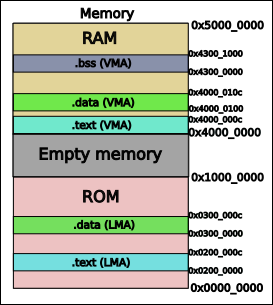

Linker Script
The GNU Linker ld is responsible for mainly three things:
- Merging several object files into a single executable file, making sure that any required external symbols are defined and seen correctly.
- Defining the memory regions where the code and data are going to physically and virtually be stored.
- Allocating the code sections into those memory regions.
After some definitions, we will see how to write a linker script to perform this three functions.
Definitions
A module refers to an object file.
A symbol is a label that represents a memory address.
A code section (.text, .data, .bss, etc) can be:
- Loadable: The contents should be loaded into the memory
- Allocatable: The space should be reserved, but nothing loaded in there.
Every loadable or allocatable section has a VMA and LMA:
-
The VMA (Virtual Memory Address) is the address where the section will be executed.
-
The LMA (Load Memory Address) is the address where the section will be loaded. It's the bootloader or startup code responsibility to copy the contents of the LMA into their respective VMA.
Linker scripts usually have the extension .ld. Comments are only allowed using a slash and an asterisk (/**/).
Symbols in linker scripts
A symbol is a reference to a memory space, not the value inside it. Take for example the following C code:
In linker terms, the symbol foo represents the memory address where the value "123" is stored. The symbol foo by itself does not occupy memory space.
A symbol is defined in the same way as a normal C variable, using any of the C equality operators.
Symbols are not exclusive to linkers scripts, as every object file may have a global or local symbol:
static int foo_local = 0; // Local symbol "foo_local", only seen within the module.
int foo_global = 0; // Global symbol "foo_global", may be seen from other modules.
extern int foo_extern = 0; // Global symbol foo_extern, expected to be defined by other module.
Therefore, source code might expect to use global symbols defined in other files or even in the linker script, using the extern directive. The different ways to declare symbols in the linker are:
<symbol> = <mem_address>; /* Declare a global symbol */
HIDDEN(<symbol> = <mem_address>); /* Declare a local symbol, only seen within the linker script. */
PROVIDE(<symbol> = <mem_address>); /* Declare a default value for a symbol, which will be defined globally ONLY if it was referenced by other module. */
Seing linker symbols in your code
Linker symbols are always treated as addresses.
When working in assembly, we can store the linker symbol as an address into a register:
.extern ld_memory_addr, .extern ld_memory_length
ldr r0, =ld_memory_addr // r0 gets loaded with the value "0x70000000"
ldr r1, =ld_memory_length // r1 gets loaded with the value "0x00010000"
In C, we need to define the variable as extern, and get its address:
extern uint32_t ld_memory_addr;
extern uint32_t ld_memory_length;
uint32_t * memory_addr = &ld_memory_addr; // memory_addr = 0x70000000
uint32_t memory_size = &ld_memory_length; // memory_size = 0x00010000
Memory regions: where to place and to execute the code
The MEMORY command creates memory regions where the different sections of the code will be placed. To define a region, you need four properties:
-
The
nameof the region: can be anything. -
The
(attributes), e.g. executable, read only, etc; which may be a combination of any of the following characters:r: Read-only section.w: Read/write section.x: Executable section.a: Allocatable section. (Space in memory should be reserved initialized with zeros).i: Initialized section.!: Invert the sense of any of the attributes that follow.
-
The physical
ORIGINbyte address. -
The physical
LENGTHof the region, in bytes.
The following example defines two memory regions. All code that is read-only or executable will go to the rom by default, meanwhile the rest will go to the ram.
MEMORY {
rom (rx) : ORIGIN = 0x00000000, LENGTH = 0x40000 /* Read-only and executable, 256K */
ram (!rx) : ORIGIN = 0x40000000, LENGTH = 0x400000 /* All other memory regions, 4M */
}
Allocating code sections into memory regions
A code section is a set of either instructions or variables under a common name (e.g .text or .data).
The linker merges several input sections, the ones defined in your application code, into a single output section, specific to the linker script, which is then located into a determined memory region.
The general syntax for declaring sections is as follows, and each component will be explained in detail in the following parts:
SECTIONS {
output_section [vma_address] [(type)] :
[AT(lma_address)]
[ALIGN(section_align)] {
input_section
...
} [>vma_region] [AT>lma_region] [=fillexp]
}
Besides, there is a special linker script variable called the location counter . or dot variable. It always holds the current VMA.
Output section attributes
-
output_section: The name of the output section (normally .text, .data, .bss, .rodata, etc). This name is only relevant for the linker script, and has nothing to do with the sections' names defined in the application code. -
[vma_address] or [>vma_region]: Only one can be used. The value of the location counter.will be updated to match the initial address of the section's VMA.[vma_address]: Sets the initial VMA with and hexadecimal address.[>vma_region]: Sets the initial VMA on the next free address in the memory region specified.- By default, the VMA is set on the next free address of any memory region with compatible attributes, or at the current location counter
.address.
-
(type): Overrides the attributes of the section. By default, the output section will have the same attributes as the input section. The options are:NOLOAD: The section will not be loaded into memory when the program is run. This is useful for the ".bss" section for example, which is an uninitialized memory space that must exist, but doesn't need to be written at first.
-
[AT(lma_address)]or[AT>lma_region]: Only one may be used.[AT(lma_address)]: Sets the initial LMA with and hexadecimal address.[AT>lma_region]: Sets the initial LMA on the next free address in the memory region specified.- By default, if the
vma_addresswas provided, the VMA and LMA will be equal. Otherwise, it will be stored on the next free memory address of the last section's LMA.
-
[ALIGN(section_align)]: Enforce an alignment for the section, so that its initial memory address is a multiple of "section_align" bytes. -
[=fillexp]: Any empty space will be filled with the pattern of=fillexp. By default, all "0" will be used.
Full list of output section attributes.
Input section attributes
The input sections refer to the code sections defined in each module to be linked. For example, you would normally merge several .text input sections into one unified ".text" output section.
Input sections are defined by the following syntax, where:
-
filename: Refers to the name of the object file, e.g. "a.o". Normally, a wildcard*is used to refer to any filename. Files will be added in alphabetical order. Always make sure that the initialization code is specifically added as the first element. -
section_name: Refers to the section to be loaded inside the file. Normally, you will see something like*(.text*), which means "from all files, load all code sections that start with.text, followed by whatever".
The location counter . will be increased from the start address of the output section by the size of the input sections. You may define empty memory regions between input sections by updating the location counter value in between calls, as such:
.output_section 0 : { /* VMA = 0 */
file1(.text) /* Include section .text from file1 */
. += 0x1000; /* Separate previous and next section with 0x1000 bytes */
file2(.text) /* Locate next section VMA */
}
Builtin functions
There are some builtin functions that provide metadata to the linked binary or help arrange the memory sections. The following is a list of the most important ones.
For initialization
BFD stands for "Binary File Descriptor", and is a short string to indicate the type of object file. For example "elf32-littlearm" tell us that the file is ELF (Executable and Linkable Format), for a 32 bit architecture, "little" endian, and for ARM processors.
ENTRY(<symbol>) // First instruction to be executed. Entrypoint.
INCLUDE <filename> // Include linker script (copy contents).
OUTPUT_FORMAT(<bfdname>) // Format for executable output (elf32-littlearm)
OUTPUT_ARCH(<bfdarch>) // Architecture of the CPU (arm)
TARGET(<bfdname>) // Default format for input files (elf32-littlearm)
For memory
ORIGIN(<memory>) // Returns the origin address of the memory region.
LENGTH(<memory>) // Returns the length of the memory region.
REGION_ALIAS(<alias>, <memory>) // Alternative name for a memory region
For sections
LOADADDR(<section>) // Returns the initial LMA of the named section.
ADDR(<section>) // Returns the address (VMA) of the named section.
ALIGN(<align>) // Returns the next multiple of "align" for the location counter (.), without modifying it, in bytes.
ALIGN(<exp>, <align>) // Returns the next multiple of "align" for the "exp", in bytes.
SIZEOF(<section>) // Returns the size in bytes of the named output section.
Complete example
The following example can be found in the "linker" folder in this repo. Consider this code and linker script:
// startup.S
.text
_start:
nop
nop
B main
main:
nop
nop
.data
str: .ascii "Hello"
.balign 4
x: .word 0x44
.bss
vector: .space 4096
/* linker_script.ld */
OUTPUT_FORMAT("elf32-littlearm")
OUTPUT_ARCH(arm)
ENTRY(_start)
HIDDEN (ram_origin = 0x40000000);
HIDDEN (ram_length = 0x10000000);
HIDDEN (rom_origin = 0x00000000);
HIDDEN (rom_length = 0x10000000);
MEMORY {
ram (!RX) : ORIGIN = ram_origin, LENGTH = ram_length
rom (RX) : ORIGIN = rom_origin, LENGTH = rom_length
}
SECTIONS {
.text : AT(0x02000000) ALIGN(4) {
*(.text*)
} >ram
.data : AT(0x03000000) ALIGN(256) {
*(.data*)
} >ram
.bss 0x43000000 (NOLOAD) : ALIGN(4) {
*(.bss*)
}
}
After compiling, we can extract the following data from the binary headers:
Sections:
Idx Name Size VMA LMA File off Algn
0 .text 0000000c 40000000 02000000 00010000 2**2
CONTENTS, ALLOC, LOAD, READONLY, CODE
1 .data 0000000c 40000100 03000000 00010100 2**8
CONTENTS, ALLOC, LOAD, DATA
2 .bss 00001000 43000000 43000000 00020000 2**2
ALLOC
3 .ARM.attributes 00000014 00000000 00000000 0001010c 2**0
CONTENTS, READONLY
Lets analyze what is happening:
-
"rom" and "ram" memory regions are defined.
-
Section ".text" starts at LMA = 0x0200_0000, and VMA = 0x4000_0000 (ram_origin). Look at the attributes:
- CONTENTS: has something in it.
- ALLOC: Allocatable (reserve the space).
- LOAD: Copy the contents to memory.
- READONLY
- CODE: contains machine instructions.
-
Later, the ".data" section starts at and address multiple of 256 (with 8 left zeros). LMA = 0x0400_0000, VMA = 0x4000_0100. VMA between 0x4000_000c and 0x4000_0100 it's filled with "0".
-
Finally, the section ".bss" is stored in VMA = LMA = 0x4300_0000. Note that the sections appears as "ALLOC" only, which means that the LMA should be reserved uninitialized, and the "NOLOAD" type was specified.
